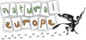

<HTML><HEAD>

<meta http-equiv="Content-Type" content="text/html; charset=UTF-8">
<TITLE>Natural Europe</TITLE>


<link href="./images/" rel="shortcut icon">
<link type="text/css" rel="stylesheet" href="./css/finder.css">
<link type="text/css" rel="stylesheet" href="http://yui.yahooapis.com/2.8.1/build/paginator/assets/skins/sam/paginator.css">

<script type="text/javascript" src="http://yui.yahooapis.com/combo?2.8.1/build/yahoo-dom-event/yahoo-dom-event.js&2.8.1/build/container/container_core-min.js&2.8.1/build/datasource/datasource-min.js&2.8.1/build/element/element-min.js&2.8.1/build/paginator/paginator-min.js&2.8.1/build/datatable/datatable-min.js&2.8.1/build/json/json-min.js&2.8.1/build/selector/selector-min.js&2.8.1/build/layout/layout-min.js"></script> 
<script type="text/javascript" src="https://www.google.com/jsapi"></script>
<SCRIPT type="text/javascript" src="http://code.jquery.com/jquery-1.7.2.min.js"></SCRIPT>

<SCRIPT type="text/javascript" src="./js/prototype.js"></SCRIPT>
<SCRIPT type="text/javascript" src="./js/jsonp.js"></SCRIPT>
<SCRIPT type="text/javascript" src="./js/sha1.js"></SCRIPT>
<SCRIPT type="text/javascript" src="./js/jaml-all.js"></SCRIPT>
<SCRIPT type="text/javascript" src="./js/finder.js"></SCRIPT>


<style >
a {
	font-size:10pt;
}
body{
	font:10px Arial,sans-serif;
	margin:2px 5px;
	background:#e7e2ce url(images/bg4_top.png) 0 0 repeat-x;
}
#footer{
	clear:both;
	margin-top:10px;
	padding:13px 0px;
	text-align:center;
	background:#915E23;
}
#footer a {
	color:#fff;
	text-decoration:none;
}
#footer a:hover { text-decoration:underline; }
#header {
	height: 97px;
	background-image: ;
	background-repeat: repeat-x;
}

#insert_facets{
	width:250px;
        
}
#insert_moreResults {
	width:150px;
}
#insert_pagination_bottom {
	padding-top:5px;
}
#insert_pagination_top {
	height:32px;
}
#insert_searchForm{
	border-spacing:0px;
	padding:12px 0px 0px 0px;
}
#insert_summary{
	padding-bottom:5px;
}
#logo {

        position:relative;
     /*   left:100px;
        top:150px;*/
        height: 97px;
	background-image: url('./images/nateur_logo.png');
	background-repeat: no-repeat;
}


#secondary_nav{
	clear:both;
	font-size:10pt;
	font-weight:normal;
	line-height:1;
	margin-top: 5px;
	padding-top: 7px;
	text-align:center;
	white-space:nowrap;
}
#secondary_nav a {
	color: #18345C;
	text-decoration:none;
}
#secondary_nav a:visited{
	color: #18345C;
}
#secondary_nav a:hover{
	text-decoration:underline;
}
.button{
	background: none repeat scroll 0 0 #915E23;
	border: 1px solid #CCCCCC;
	color: #FFFFFF;
	cursor: pointer;
	font-weight: bold;
	height: 50px;
	margin: 2px 0 0;
	padding: 0 8px;
	width:100px;
}
.lineLeft {
	border-left:1px solid #E3E3E3;
}
.lineRight {
	border-right:1px solid #E3E3E3;
}
.search-input{
	border: 4px solid #E7E2CE;
	color: #797979;
	cursor: text;
	font-size: 1em;
	height: 50px;
	margin: 2px 0 0 0;
	padding: 1px 2px;
	width: 500px;
}
.separator_top{
	/*border-top:2px solid #ccc;*/
}
.separator_bottom{
	/*border-bottom:3px solid #ccc;*/
}

.heading {

margin: 1px;
color: #000;
padding: 3px 10px;
cursor: pointer;
position: relative;
background-color: #EEEEEE;
}

.metacontent {

padding: 5px 10px;
background-color:#EEEEEE;
}

#rb_Clear {
	text-align:right;
}

#rb_Clear input[type=submit] {
    background: none repeat scroll 0 0 #915E23;
    border: medium none;
    color: #FFFFFF;
    cursor: pointer;
    padding: 5px 10px;
}

</style>


</HEAD>

<BODY class="yui-skin-sam">
<table width="90%" cellspacing="0" style="">

<tr id="header">
<!-- Header -->
<td id="logo" colspan="3">
<div id="insert_searchForm" align="center" style="position:relative; top:15px;left:100px;">
<FORM name="searchForm" id="searchForm" action="" method="post" onsubmit="doSearch(); return false;">
<TABLE cellpadding="3" cellspacing="0">
<TBODY><TR>
<TD><INPUT name="query" id="query" class="search-input" maxlength="256" title="Open Discovery Space Search"></TD>
<TD><INPUT name="searchbutton" id="searchbutton" class="button" type="submit" value="Search"></TD>
</TR></TBODY>
</TABLE>
</FORM>
</div>
</td>
</tr>

<tr>
<!-- Summary -->
<td id="insert_summary" colspan="3"></td>
</tr>

<tr>
<!-- Facets -->
<td id="insert_facets" class="lineRight" valign="top">
</td>
<!-- Results -->
<td valign="top">
<div id="insert_pagination_top" style="display:none"></div>
<div id="insert_results"></div>


<div id="insert_pagination_bottom"></div><br>


</td>
<!-- More Results -->
<td id="insert_moreResults" class="lineLeft" valign="top"></td>

</tr>
<!-- Separator Bottom -->
<!--<tr>
<td colspan="3">
	<div class="separator_bottom">
		<DIV id="secondary_nav">
			<A href="http://ariadne.cs.kuleuven.be/trac/newticket?component=finder">Report Problem</A> - 
			<A href="http://www.ariadne-eu.org/index.php?option=com_contact&Itemid=70">Contact</A>
		</DIV>
	</div>
</td>
</tr>-->
</table>

<!-- Footer -->
<div id="footer">
	<br />
	<a href="http://www.natural-europe.eu/" target="_blank">Natural Europe Project website</a><br />	
</div>


<script type="text/javascript">
/*
 * function customizeFinder() is called at initialisation time
 */
function customizeFinder() {
	return {
		"externalSources": ["wp","scr","ss","gb"],
                "pageContainers": ['bottom','top'],
		//"facets": ["provider","language","context","lrt","format","rights","tagr"],
              //  "facets": ["language","context","lrt","iur","rights", "il"],
              //
  
//               facets: ["provider","language","format", "rights"],
// facets: ["provider","language","format", "rights", "lom.rights.copyrightandotherrestrictions.string","lom.general.coverage.string","lom.classification.taxonpath.taxon.entry.string"],
//   facets: ["provider","language","format", "rights","classification","spatial"],
   facets: ["provider","format"],
                //"tagr:", "lom.educational.typicalagerange.string:");
              // "facets": ["format", "keyword"],
              // "facets": ["language","lrt","format","lom.classification.taxonpath.taxon.entry.string"],
		//"facetIncludes": {"language":["en","el","fr","nl","de"]},
        //"limitFacetDisplay": {"provider":["n.h.m.c. - univ. of crete"]},
		"maxLengthDescription":  250,
		"pageSize": 12,
		"repositoryName": "Natural Europe (Cultural)",

 		"serviceUrl":"http://collections.natural-europe.eu/repository/api/ariadne/restp"
		


	}
}
</script>


<div id="script-translator"></div>

</BODY></HTML>
